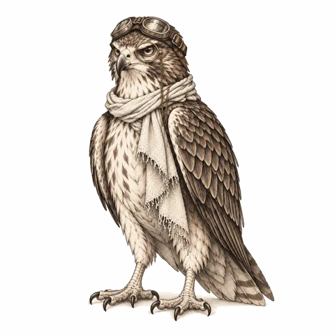

Claude Code · ~8 minutes

We will make your computer do something on its own when an AI agent finishes its job. Example project: claude-done-pixel.
If you don't know what an AI agent is, look at this first: What is an AI agent?
1 · The problem
Claude Code is an AI agent that runs in the terminal: it writes code, edits files, and runs commands. Some jobs take minutes.
Meanwhile you are working in another window, and every half minute you go back to the terminal to see "is it done?" Your attention gets split and you lose time.
What we want is simple: Claude should tell me when it finishes.
2 · The solution has a name
$ waiting for the Stop event…
Turn the hook off and try again: see the difference between an event and automation.
Hook: A rule that automatically runs a command you give at a certain moment in a program.
In Claude Code, hooks are written in a settings file: settings.json. Each hook says two things:
Stop: when Claude finishes an answer.3 · The settings file, line by line
The block added to the ~/.claude/settings.json file in claude-done-pixel's WSL setup:
{ "hooks": { "Stop": [ { "hooks": [ { "type": "command", "command": "(powershell.exe -NoProfile -ExecutionPolicy Bypass -WindowStyle Hidden -File 'C:\\Users\\you\\claude-done\\claude-done.ps1' >/dev/null 2>&1 &)" } ] }
]
}
}4 · Live demo
In reality this character appears at the bottom right of your screen, right above the clock. I redrew it here in the browser:
It runs in from the right, jumps twice, waves the green flag twice, and leaves to the right. About 6.5 seconds, silent. The window lets clicks through and does not steal focus; what you are typing is not interrupted.
5 · Same idea, different agent
In OpenAI's coding agent Codex, the hook has a different name but the idea is the same: when a turn ends, Codex sends an agent-turn-complete notification, and the notify command in the settings file runs on that notification.
chatgpt-done-pixel: above the clock when the turn ends
Lesson: tools change, the concept stays. If you have learned to ask "which events exist, and what can I run on that event?", you can apply it to any agent.
6 · Check
When does the Stop hook run?
Stop runs after every answer; the character jumps even when you just say "hello." If that is too frequent, Claude Code's hook guide explains ways to limit when it fires.
7 · Try it yourself
On Windows, if Claude Code is installed, run these in order in PowerShell:
git clone https://github.com/SametDuhan/claude-done-pixel
cd claude-done-pixel
powershell -ExecutionPolicy Bypass -File install.ps1
The install script adds the Stop hook to settings.json and saves a backup of your old settings as settings.json.bak. Restart Claude Code, ask something, and wait for the character. To remove it: uninstall.ps1.
Done